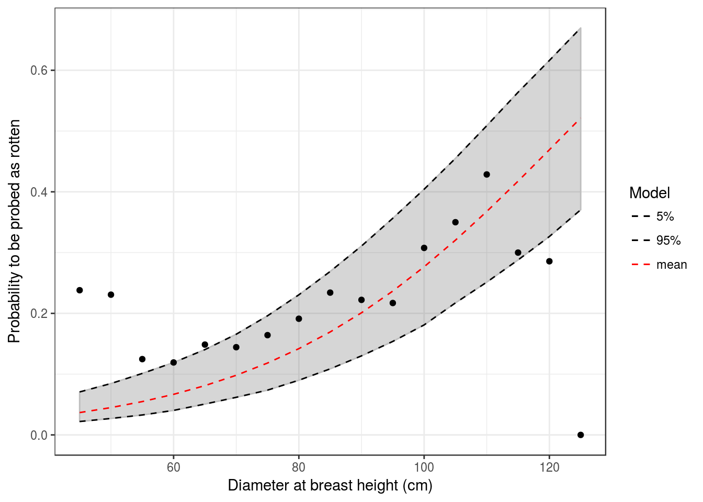
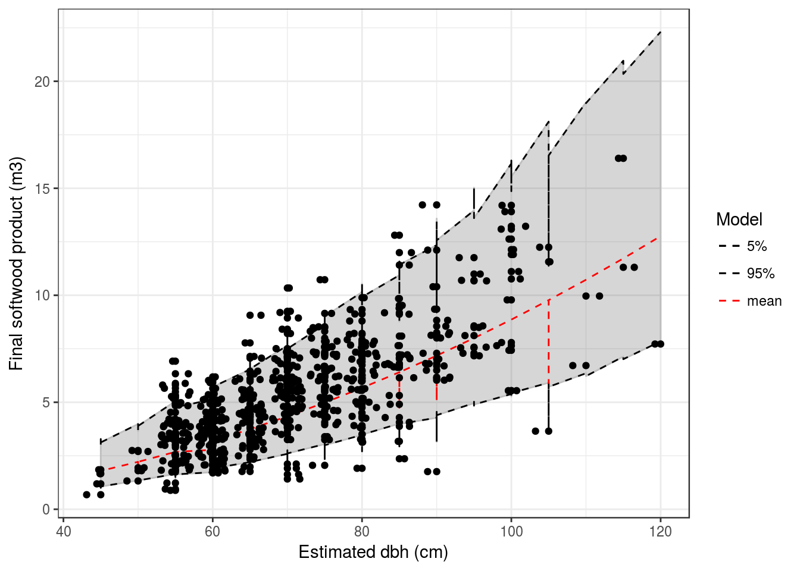

C Appendix 3: Rotten tree model
In order to simulate sylviculture with TROLL we needed to implement a new sylviculture module inside TROLL model code. A first litterature review was completed by an interview with Laurent Descroix of the Office Nationale des Forêts. We discovered that rotten trees were not random and seemed to depend both on tree species and diameter. This document presents modelling of relation between rotten trees and their species and diameter.
In fact we have two different objectives:
- Predict if a tree will be probed as rotten (models M)
- Predict how much of tree volume is rotten (models N)
First all M model can be written as follow: \[Rotten_n \sim \mathcal{B}(\theta_n), ~~n \in [1,N_{=3816}] ~~ p \in [1, P_{=8}], ~~ s \in [1, S_{=43}]\] Secondly, all N models depend on a latent variable being the percentage of rotten wood \(Pt_r\). We can assume that all trees are growing depending on species \(s\) and plot \(p\) fertility and are supposed to have a full healthy volume \(V_h\) for a given diameter \(dbh\). We obtain following model:
\[V_f \sim log\mathcal{N}(V_h*Pt_r, \sigma), ~~n \in [1,N_{=3268}] ~~ p \in [1, P_{=8}], ~~ s \in [1, S_{=43}]\]
We retained following models :
| M | Model |
|---|---|
| \(M_{s,p}\) | \({P_{rotten}}_n \sim \mathcal{B}(inv_{logit}(\beta_0 + \beta_1*dbh_n + {\beta_2}_p + {\beta_3}_s))\) |
| \(N_{s,p} + L_{s,p}\) | \(Volume_{of~wood} \sim log\mathcal{N} (log[((\beta + \beta_p + \beta_s)*dbh^2)*(1 - Pr*((\theta + \theta_p + \theta_s) *dbh^2))], \sigma)\) |
C.1 Probed rotten (M)
Based on complexity (number of parameters), convergence and likelihood we selected model \(M_{p,s}\):
\(M_{s,p}\): \({P_{rotten}}_n \sim \mathcal{B}(inv_{logit}(\beta_0 + \beta_1*dbh_n + {\beta_2}_p + {\beta_3}_s))\)

| 45 | 50 | 55 | 60 | 65 | 70 | 75 | 80 | 85 | 90 | 95 | 100 | 105 | 110 | 115 | 120 | 125 | |
|---|---|---|---|---|---|---|---|---|---|---|---|---|---|---|---|---|---|
| P | 4 | 4 | 5 | 7 | 8 | 10 | 12 | 14 | 17 | 20 | 24 | 28 | 32 | 37 | 42 | 47 | 52 |
C.2 Rotten volume (N)
Based on complexity (number of parameters), convergence and likelihood we selected model \(N_{p,s}\) associated to hyperparameter \(\rho\) with model \(L_{p,s}\):
\(N_{s,p} + L_{s,p}\): \(Volume_{of~wood} \sim log\mathcal{N} (log[((\beta + \beta_p + \beta_s)*dbh^2)*(1 - Pr*((\theta + \theta_p + \theta_s) *dbh^2))], \sigma)\)

| 45 | 50 | 55 | 60 | 65 | 70 | 75 | 80 | 85 | 90 | 95 | 100 | 105 | 110 | 115 | 120 | 125 | |
|---|---|---|---|---|---|---|---|---|---|---|---|---|---|---|---|---|---|
| Vf | 1.66 | 2.02 | 2.39 | 2.78 | 3.18 | 3.58 | 3.98 | 4.37 | 4.74 | 5.09 | 5.41 | 5.68 | 5.9 | 6.06 | 6.15 | 6.16 | 6.08 |
| Vp | 7.00 | 9.00 | 11.00 | 13.00 | 15.00 | 18.00 | 20.00 | 23.00 | 26.00 | 29.00 | 32.00 | 36.00 | 40.0 | 43.00 | 47.00 | 52.00 | 56.00 |